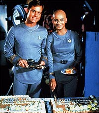
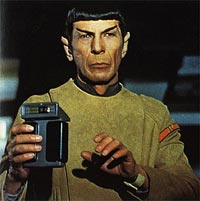
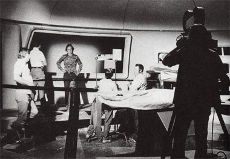
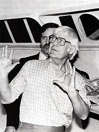
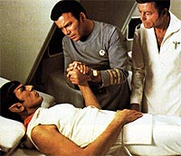
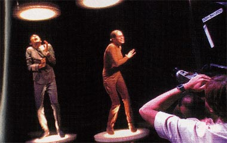

|

|
Enquanto a Fase II
existiu como uma pr-produo, vrios roteiristas estavam
trabalhando nas histrias dos primeiros episdios da nova srie.
Mal sabiam eles que as aventuras de Kirk, McCoy, Xon e Ilia
existiriam apenas em suas mentes, j que, aps sete meses de
idas-e-vindas, a srie acabaria sendo abortada.  Em muitas revises do
roteiro j estava definido que ambos seriam absorvidos por V'Ger
no decorrer da trama --os personagens que os roteiristas estavam
construindo teriam vida bem curta, pois no estariam em futuros
filmes de Jornada que porventura fossem produzidos aps o
primeiro.   S que o diretor no
seria mais ele. Embora os executivos da Paramount tivessem
assegurado a Collins o emprego, estavam em contato com o veterano
diretor Robert Wise para levar em frente o projeto. Wise fechou
com a Paramount em maro de 1978 e Collins disse adeus ao sonho
da direo.    Com Nimoy e Wise na produo, as presses para que outro escritor se juntasse a Roddenberry na elaborao da verso final do roteiro cresciam. O tempo estava passando e Gene no dava conta. Em abril de 1978, Gene entrou em contato com Harold Livingston. Harold, que originalmente coordenaria os roteiristas da Fase II, conta como recebeu o pedido do criador de Jornada. "Logo que atendi o telefone percebi que Gene estava com problemas. No dia seguinte ele me enviou o roteiro e, eu juro, no sei dizer quantas vezes o haviam reescrito. Alguns dias depois encontrei Bob [Wise] e Gene e disse: 'esse roteiro est terrvel, no d para usar de maneira alguma'. Eles concordaram e me chamaram de volta para colaborar." Livingston prossegue. "Eu sabia como era trabalhar com Gene, ento coloquei algumas condies que ele no gostou, mas que me preservariam de suas interferncias. Reescrevi as primeiras 50 pginas do roteiro e enviamos para Paris, que onde Katzenberg e Eisner estavam. Eisner me ligou e disse 'que coisa essa?'. Eu no sabia do que ele estava falando at descobrir que Gene havia reescrito minhas 50 pginas antes do envio!" Isso acabou ocorrendo com frequncia, e por quatro vezes Livingston quis abandonar o barco, j que Gene sempre estava em seu caminho. Mas era sempre convencido a voltar. Na quinta e ltima vez ele no queria voltar de maneira alguma, mas Katzenberg se trancou em seu escritrio com Livingston e somente o deixaria sair quando concordasse em, mais uma vez, reconsiderar a desistncia. No final, Harold Livingston aceitou retornar, mas somente se, aps o trmino do trabalho em Jornada, a Paramount o contratasse para escrever um roteiro sobre qualquer projeto que Livingston escolhesse. Katzenberg concordou. E aps a estria de "Jornada nas Estrelas - O Filme" Livingston nunca mais trabalhou ou falou com Gene Roddenberry. Com o roteiro finalizado, Spock de volta, Stephen Collins no papel de Willard Decker e Robert Wise na direo, as coisas comearam a se arrumar. O processo de filmagem da primeira aventura de Jornada para o cinema seguiu em frente, com acertos e erros, tanto que somente nos dias de hoje Wise conseguiu lanar a verso definitiva do filme como ele queria. Todo o trabalho da elaborao da Fase II foi, segundo o ex-produtor Robert Goodwin, "uma experincia terrvel, mas d para entender tudo e at aceitar", ele explica, "pois assim que as coisas funcionam em Hollywood. assim que costuma ser..." E com todos esses atropelos, a Fase II serviu de embrio para o lanamento de Jornada no cinema, que por sua vez iniciou a carreira cinematogrfica do franchise. s portas da estria do dcimo filme para cinema, vale a pena lembrar que a reinveno de Jornada ocorreu naquela poca, quando Xon quase roubou o lugar de Spock. |

Antes: Um
piloto para a srie
A seguir: Episdios perdidos